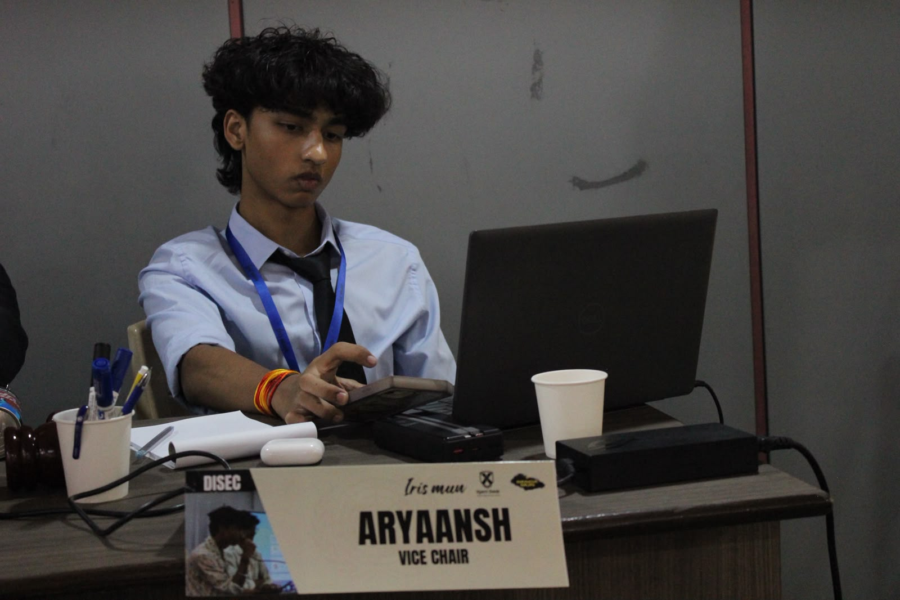

About the Committee
The Junior United Nations Human Rights Council is an introductory committee designed for young and first-time MUN delegates. It provides a platform to debate global human rights issues, represent national policies, and collaborate on practical solutions through diplomacy. Delegates develop essential skills in public speaking, negotiation, critical thinking, and resolution writing while gaining a deeper understanding of international cooperation and the protection of human rights.
Agenda
- Addressing global conflicts and peacekeeping operations
- Sanctions and international enforcement mechanisms
- Security implications of emerging technologies
Background Guide
Download the official background guide for this committee: UNSC Background Guide (PDF)
Executive Board

Co-President: Aryaansh Singh
A seasoned delegate and dynamic leader, Aryaansh brings a blend of experience, confidence, and diplomacy to the Executive Board. He has been an active participant in the MUN circuit, where his articulate debating style and sharp analytical thinking have earned him recognition across multiple conferences. Beyond the committee rooms, Aryaansh is also a national-level swimmer, demonstrating the same discipline and perseverance in the pool that he carries into his leadership roles. His journey through both academics and extracurricular pursuits reflects his dedication to continuous growth and excellence. As Vice Chair, Aryaansh aims to foster a collaborative, intellectually stimulating, and respectful environment where every delegate’s voice is heard. His passion for diplomacy, combined with his calm yet impactful presence, makes him a guiding force in shaping meaningful discussions and resolutions.
Co-President: Karthikeya Budha
Karthikeya Budha is an accomplished student leader and emerging entrepreneur with a distinguished record in diplomatic simulation and organizational management. As the Founder and Managing Director of Repallio Clothing and Label, he has demonstrated significant aptitude in operational leadership and market strategy. His extensive engagement in international relations is evidenced by his executive roles within the Meru Youth Parliament and a comprehensive portfolio of Secretariat positions across numerous conferences.Beyond his professional and academic pursuits, Karthikeya maintains a keen interest in complex narrative structures and cinematic world-building. He is particularly engaged with the thematic depth of Breaking Bad and the expansive, serialized storytelling of One Piece. Furthermore, his appreciation for the cultural impact of Indian cinema is reflected in his interest in the work of Prabhas. This multifaceted profile underscores a rare balance of rigorous leadership, entrepreneurial initiative, and a deep-seated appreciation for contemporary media and arts.